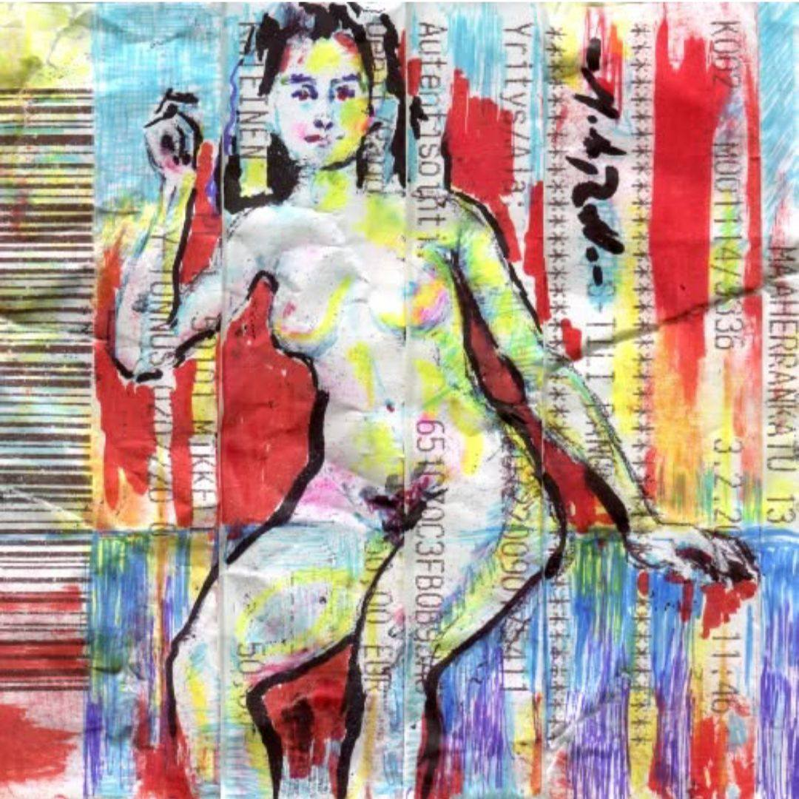
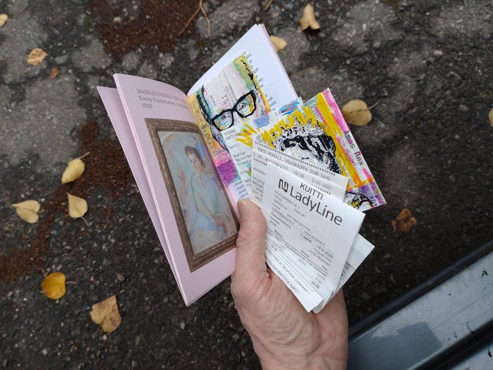
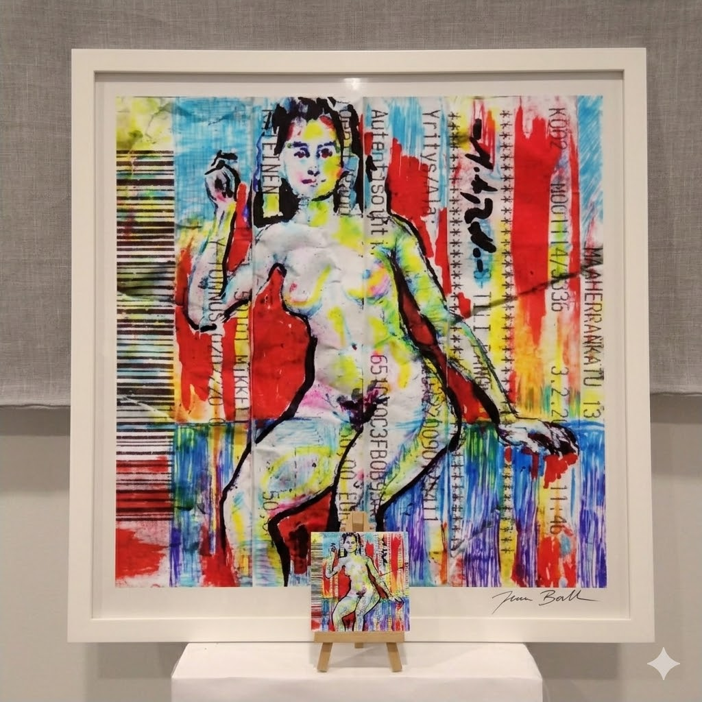

Pop Art de Mako
Kierrätän kuitteja
Työskentelen usein kirjaston rauhassa ja kierrätän taskuihini kertyneitä kuitteja teosteni pohjana. Taittelemalla kuitin neliöksi luon raamit, joiden sisään aikamme piirturit – kuitin tekstit ja grafiikka – asettuvat osaksi taideteosta.
Pienelle kuitille syntyy piirros kaikilla käsiini osuvilla kynillä. Valmis teos skannataan ja skaalataan suureksi kirjaston laitteilla, jolloin arkisesta paperinpalasta kasvaa vaikuttava, kookas kokonaisuus. Yleensä tulostan piirroksen pinkopohjalle esimerkiksi muotokuvan 50cm x 50cm. Toisinaan haluna viedä prosessin loppuun asti ja printtaan kirjastossa omalle happovapaalle paperille neljässä osassa(A4 koko), jotka sitten leikkelen ja yhdistän kehyksiin n. 40cm x 40cm.

Haluatko kuitin?
Akseli Gallen-Kallelan tiedettiin käyttäneen prostituoituja malleinaan. Kuitteja katsellessa nousee ajatus: nuo mallit tuskin saivat palveluistaan kuitteja, eikä heidän oikeuksiaan kukaan valvonut.

Taskusta poimittu inspiraatio
Jokainen löydetty kuitti on uusi alku. Tässä näkyy prosessin inhimillinen lähtöpiste: arkinen paperinpala, joka odottaa muuntumistaan tarinaksi.

Zoomattu kuva
Alkuperäinen kuittipiirros haalistuu ajastaan mutta sähköinen kopio säilyy ikuisesti. Kirjaston laitteilla skaalattu teos tuo esiin kuitin ja kynän jäljen yksityiskohdat, jotka muuten jäisivät huomaamatta.